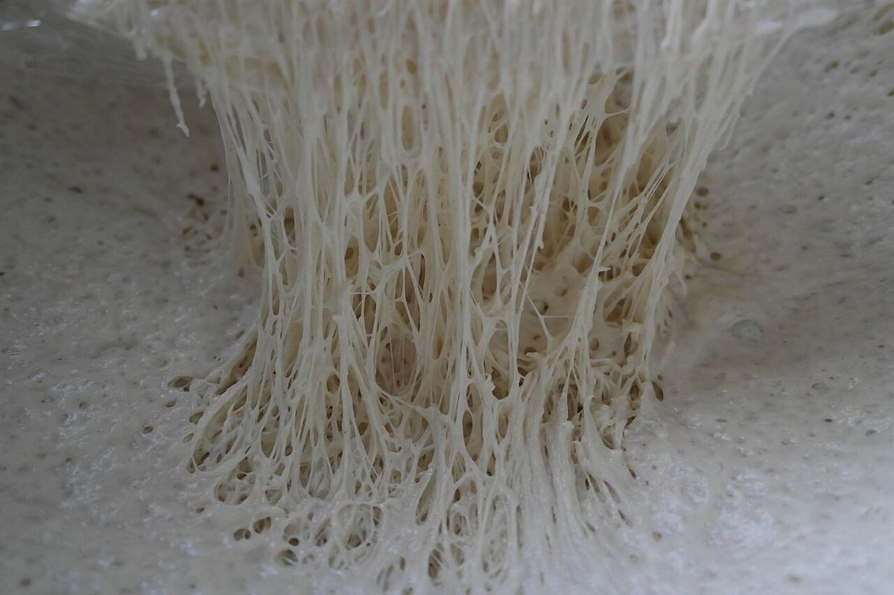

4枚目のふるい / 目開き 250μm
細かい目まで、確認できたこと。
お店について確認できているのは、所在地・電話番号・Instagramのアカウントだけです。
確認できていること
- 店名は「デメララベーカリーファクトリーキッチンなら」、業種はパン屋(ベーカリー)
- 所在地は奈良県生駒市北大和1丁目23-1(〒630-0121)
- 電話番号は0743-85-5222
- Instagramは @demerara_n
- 営業時間・定休日・メニュー・価格・ご予約・駐車場は準備中

想像してみる(制作側の創作)
粉が、ふるいを通ると。
ふるいは、粒の大きさをそろえたり、固まりをほぐしたりする道具です。制作側は、粉がふるいを通ってふわりと細かくなっていく様子から、このサイトの構成を思いつきました。お店の実際の様子・考え・メニューとは関係のない、制作側の連想です。
